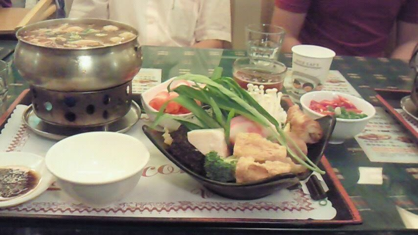

- 直行便で約3時間半〜4時間。2泊3日でも楽しめ、観光は10月〜5月がおすすめとされています（JTBの台湾ページ）。
- 飛行機とホテルをまとめて予約できるツアーなら、はじめてでも手配に迷いにくいです。
- 台湾の「オンライン事前入境登録」は、訪問の7日前から入境の直前までにできます（無料。公式サイトから）。早めに済ませておくと安心です。
- 夜市の食べ歩きは台湾旅行の楽しみ。筆者が見た夜市の様子は、下の「夜市と食べもの」で。夜市や観光地ではスリに注意（外務省）。
台湾はどんなところ？
筆者が台湾を旅したときに感じたことです。

夜市と食べもの
屋台の料理は、苦手なにおいや辛さのものもあります。少しずつ試して、無理はしないでください。
出発前に確かめること
| 入境の登録 | 2025年10月1日から、観光などで台湾を訪れるときは「オンライン事前入境登録」が必要です。訪問の7日前から入境の直前まで、移民署の公式サイトで無料で登録できます。紙の入境カードは廃止されています（日本台湾交流協会）。手数料を取る偽サイトの被害が出ているので、必ず公式サイトから登録してください。 |
|---|---|
| ビザ | 観光などで90日以内の滞在なら、ビザは要りません（外務省の海外安全ホームページ）。 |
| パスポート | 観光など短期の滞在なら、残りの有効期間は「滞在予定日数以上」あればよいとされています（日本台湾交流協会）。 |
| 時差 | 日本より1時間遅れています。サマータイムはありません（JTBの台湾ページ）。 |
| お金 | 通貨は台湾元（ニュー・タイワンドル、NT$）。チップの習慣は基本的にありません（HIS・JTBの台湾ページ）。 |
| 電圧 | 110V・60Hz（JTBの台湾ページ）。 |
| 水 | 水道水や氷は避けて、ミネラルウォーターを、と案内されています（HIS・JTBの台湾ページ）。 |
出典：日本台湾交流協会（オンライン事前登録）、日本台湾交流協会（旅券の残存有効期間）、外務省 海外安全ホームページ、HIS・JTBの台湾ページ（2026年11月13日に確認）。入国の条件は変わることがあるので、出発前にもう一度確かめてください。
何日あればいい？いつ行く？
JTBの台湾ページによると、日本から台湾へは直行便で約3時間半〜4時間。そのため2泊3日の短い日程でも台湾旅行が楽しめる、とされています。HISやJTBのツアーにも、3日間・4日間のものが多く並んでいます。台北のほかに台中・高雄・花蓮なども回るなら、日数に余裕をみておきましょう。
行く時期は、JTBの台湾ページでは「夏は湿度が高く蒸し暑いため、観光は10月〜5月の秋から春がおすすめ」とされています。ただし12〜3月は雨が降ると冷え込むので厚手の上着があると安心で、客室に暖房がないホテルもあるそうです。HISの台湾ページでも、台北など北部の冬は10℃を下回ることがあり、夏は室内の冷房が効きすぎていることがあるので、カーディガンなど調節できる服装を、と案内されています。
空港から市内へ
JTBの台湾ページによると、台湾には桃園・台北松山・高雄などの指定の空港から入境します。台北への玄関口になる桃園空港からは、桃園空港MRT（桃園メトロ）が空港第1ターミナル駅・第2ターミナル駅と台北駅を結んでいて、快速列車と普通列車があります（桃園メトロ公式サイト）。時刻と運賃は、公式サイトで検索できます。
タクシーを使うときは、外務省の海外安全ホームページが注意をまとめています。黄色い車体に「計程車」などと書かれた車が正規のタクシーで、メーターの操作や遠回り、紙幣のすり替えなどのトラブルが起きているそうです。降りるときはレシートをもらい、運転手の名前や車両ナンバーを控えておくと、忘れ物をしたときにも役立ちます。
スマホとネット
台湾でスマホを使う方法は、おもに次の4つです。どれを選んでも、料金・データ量・使える日数は会社ごとに違うので、各社の公式サイトで確かめてください。
- 現地のSIMカード：台湾の通信会社の旅行者向けSIM。スマホがSIMフリーかどうかを先に確かめておきます。
- eSIM：カードの差し替えがいらないタイプ。スマホがeSIMに対応しているか確かめておきます。
- 日本の携帯会社の海外ローミング：手続きがかんたんな分、料金を事前に確かめておきましょう。
- Wi-Fiルーターのレンタル：何人かで1台を使いたいときに。
治安と気をつけること
外務省の海外安全ホームページ（台湾の安全対策基礎データ、2025年11月28日更新）は、台湾は親日的な人が多く日本人に人気の旅行先である一方、日本人が犯罪の被害に遭う例も多く起きている、としています。台湾全体で窃盗や詐欺が増えているとも書かれています。
- 夜市（士林夜市・饒河夜市など）や九份・龍山寺などの観光地で、バッグから財布を盗られる被害が出ています。バッグは体の前で抱えるなど、取り出し口がいつも目に入るように。
- 食事や買い物の最中に、荷物から目を離したすきの置き引きにも注意。
- 多額の現金や貴重品は持ち歩かず、現金とクレジットカードは分けて持つ。パスポートのコピーと、カード会社の連絡先を控えておく。
- 日本語で親しげに近づいてくる人の誘いには乗らない。SNSで知り合った人からの投資やお金の話は詐欺の可能性があります。
- MRT（地下鉄）の車内での飲食やガムは法令で禁止されていて、罰金が科されることがあります。
出典：外務省 海外安全ホームページ（台湾 安全対策基礎データ）、桃園メトロ公式サイト、HIS・JTBの台湾ページ（2026年11月13日に確認）。
ツアーの選び方
飛行機とホテルだけを決めて、あとは自分で動くタイプ。JTBの「JTBMySTYLE」は、航空券とホテルに、空港の送迎や現地観光を付けるかどうかを選べるプランで、添乗員は同行しないと案内されています。
はじめての海外で不安なら、添乗員が同行するツアーもあります。HISの台湾ページにも、添乗員同行のツアーが並んでいます。
JTBの台湾ページでは、夜市やグルメの台北、九份、台湾新幹線で行く台中・高雄などが紹介されています。
| HIS | JTB | |
|---|---|---|
| 台湾ページで探せるもの | 台湾のツアー（添乗員同行のツアーもあり） | 航空券＋ホテル、海外ツアー、添乗員同行・現地係員ツアー |
| 出発地 | 出発地ごとにページあり（首都圏発・九州発・沖縄発など） | 東京発・中部発・関西発・九州発・北海道発など |
| 特徴 | おすすめツアーが出発日・ホテルのクラスつきで並ぶ | 「JTBMySTYLE」で送迎・現地観光の有無を選べる |
| 向く人 | ツアーを一覧から選びたい人 | 飛行機とホテルを決めて、ほかは自分で組みたい人 |
HIS・JTBの台湾ページの表記です（2026年11月13日に確認）。
出発前のチェックリスト
- パスポートの有効期限を確かめる。
- 訪問の7日前から入境の直前までに、台湾の「オンライン事前入境登録」を公式サイトで済ませる（無料）。
- 海外でスマホを使う方法（現地のSIMやeSIM、海外ローミング、Wi-Fiルーター）を決めておく。
- 台湾元への両替や、クレジットカードの準備をしておく。
- 日本の家電を使うなら、電圧（110V）に対応しているか確かめる。